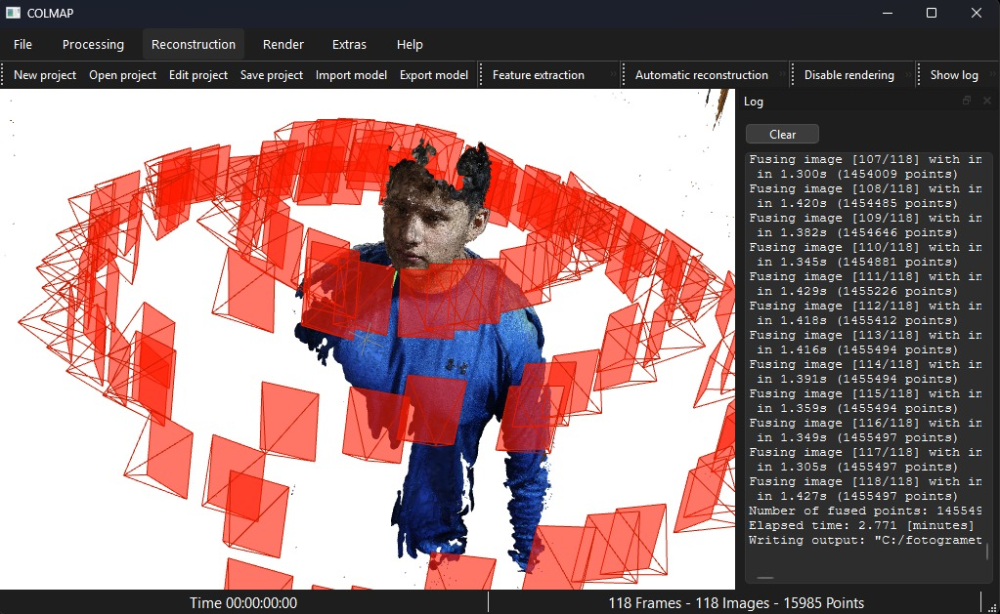

Reconstrucción tridimensional de un integrante mediante múltiples fotografías
Esta sección presenta el proceso de fotogrametría realizado con COLMAP. Para la reconstrucción se utilizaron múltiples fotografías tomadas alrededor de un integrante del grupo. El software procesó las imágenes, identificó puntos comunes, calculó la posición de las cámaras y generó una reconstrucción tridimensional parcial mediante nube de puntos y malla 3D.
En la siguiente imagen se observa el resultado generado por COLMAP. Las cámaras aparecen representadas en color rojo alrededor del modelo reconstruido, mientras que la figura central corresponde a la reconstrucción parcial del integrante.

COLMAP
Individual images
Sparse model y Dense model
PLY / Poisson Mesh
Los archivos generados por COLMAP se guardaron en formato PLY. Estos archivos pueden abrirse en programas compatibles con modelos 3D, como COLMAP, MeshLab o Blender.
El proceso permitió obtener una reconstrucción tridimensional parcial del integrante a partir de fotografías. Aunque el resultado no es completamente perfecto, evidencia el funcionamiento de la técnica de fotogrametría, ya que se logró calcular la posición de las cámaras y generar una nube de puntos/malla del cuerpo. La calidad final depende de factores como la iluminación, nitidez de las imágenes, estabilidad de la persona y textura del fondo.